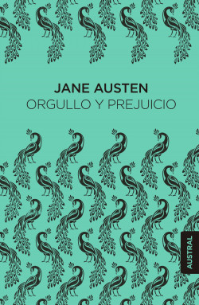
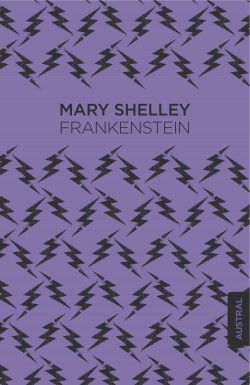
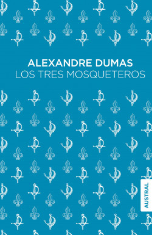
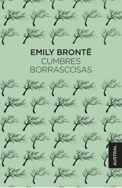
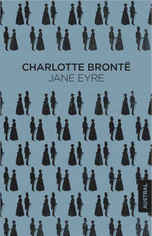
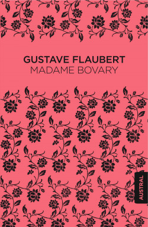
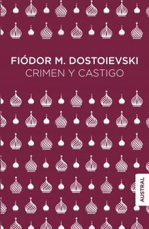
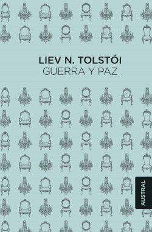

|  |
Orgullo y Prejuicio Dos ricos jóvenes, el señor Bingley y el señor Darcy, aparecen en su punto de mira e inmediatamente se ven señalados como posibles presas . De hecho, la relación entre la hija mayor, Jane, y el señor Bingley parece muy prometedora pero, por influencia del arrogante señor Darcy, se frustran todas las esperanzas. La intervención de Elizabeth, la hija segunda, perspicaz, consciente de su valor, y algo rebelde, determinará el rumbo de la novela. En ella el opresivo ambiente de la familia, la presión del matrimonio, la diferencia de clases, el fantasma de la pobreza y la delicada sensibilidad de una heroína decidida, pero no libre de errores de juicio y dudas de comportamiento, se conjugan para crear una obra maestra leída a lo largo de más de dos siglos. Precio: 11.95€ |
|  |
Frankenstein ¿Puede el hombre crear vida? ¿Cuál es nuestra relación con Dios? Éstas son algunas de las preguntas que cuestiona Mary Shelley en Frankenstein, su novela gótica y obra más famosa. Frankenstein fue todo un desafío para la época, ya que cuestiona algo tan básico como la creación de la vida. El libro te llevará por una fantástica historia a la vez que te hará reflexionar, donde las contradicciones de la vida y la muerte estarán muy presentes. Por esta capacidad de trascender sea probablemente que Frankenstein esté hoy entre los clásicos de la literatura. Precio: 29.90€ |
|  |
Los tres mosqueteros Esta obra imprescindible con su famoso lema «¡Todos para uno y uno para todos!» representa los ideales de amistad, honor y lealtad. Escrita por Alexandre Dumas, esta historia no tiene nada que envidiarle a cualquier novela de aventuras: sus páginas están plagadas de duelos, intrigas, secuestros y traiciones urdidos por una mano enemiga que quiere conspirar contra el trono. Todo esto junto al carisma de sus protagonistas, D’Artagnan, Athos, Porthos y Aramis, convierte a Los tres mosqueteros en uno de los libros clásicos recomendados para cualquier amante de las grandes historias. Precio: 15.95€ |
|  |
Cumbres borrascosas Esta novela fue un auténtico desafío para los críticos y lectores de su época. Tanto por la estructura de la novela, como por la complejidad de los personajes y de la trama, avanzada a su época, este clásico es una delicia para cualquier lector que quiera emocionarse con una trama profunda y compleja. Precio: 11.95€ |
|  |
Jane Eyre Jane Eyre, la obra que coronó el talento de Charlotte Brontë, tiene los ingredientes de una novela gótica pero supera con mucho las convenciones de su género. Jane, la protagonista, nos muestra un nuevo modo de descubrir la realidad, y con su reflexión la acompañamos en un viaje hacia la autenticidad. Una delicia de leer. Precio: 12.95€ |
|  |
Madame Bovary ¿Te apetece un viaje a la Francia del siglo XIX? Madame Bovary es todo un clásico de la literatura francesa, donde se retrata la vida de la protagonista en una sociedad donde no tiene ni voz ni voto. A través de la mirada del personaje, descubrimos la Francia de después de la revolución francesa y las costumbres de la alta nobleza. Precio: 12.95€ |
|  |
Crimen y castigo Si quieres vivir un viaje tanto histórico como introspectivo del comportamiento humano, Dostoievski es el autor ideal para ponerte entre la espada y la pared. Crimen y castigo es una de las grandes obras de la literatura rusa, así como de la literatura universal, y trata temas tan esenciales como la muerte, la culpa o la locura. Es un enfrentamiento con la moral de los personajes, que se caracterizan por tener una gran profundidad. Precio: 14.95€ |
|  |
Guerra y paz Publicada entre 1865 y 1869, nos cuenta el relato épico de cinco familias rusas durante la invasión napoleónica. Se trata de una obra monumental que incluye a más de quinientos personajes históricos y de ficción, y que alterna en su trama historias familiares con las vicisitudes del ejército napoleónico, la vida en la corte de Alejandro o las batallas de Austerlitz y Borodinó. Precio: 17.95€ |
© La Rana Hyliana.